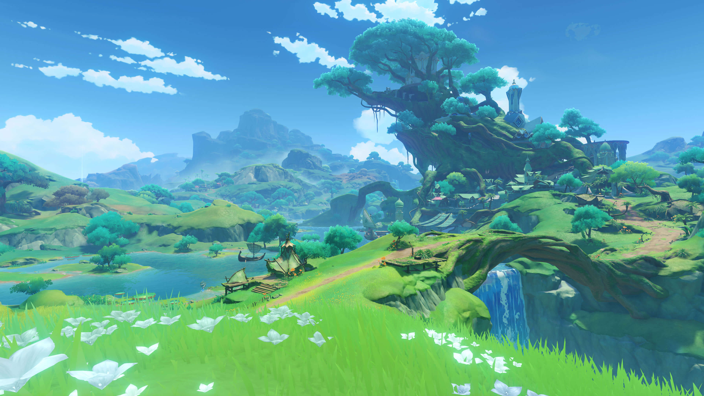

The Nations of Tevyat
The following are the current nations in Genshin Impact and are numbered by the release and/or placement in storyline adventure. The other nations listed are future nations.
- Mondstadt
- Liyue
- Inazuma
- Sumeru
Mondstadt

Out of seven nations (4 currently released), Mondstadt is the first nation we enter as the traveler, looking for our lost sibling. We meet characters like Amber, Kaeya, Lisa, and more to add them to our starter team. We also start our adventure to meet the archon of the nation (who does not rule over it to perserve the concept of freedom). We meet Venti, the anemo archon (can be considered the god of freedom), and fight a dragon! Some areas within the Mondstadt region are Springvale, Dragonspine, Windrise, etc. Dragonspine was released in version 1.2 and features a cold mountain area!
Liyue

Liyue is the second nation we enter as the traveler, although it was released around similiar times as Mondstadt. We meet characters like Xiao, Ningguang, Xiangling, and others on our journey and create frienships along the way. We continue our exploration and search for our sibling, meet new monsters, and challenges. Here, we meet the geo archon (can also be considered the god of contracts), and fight off sea gods who attack Liyue Harbor! Some areas within the Liyue region are the Chasm, Qingce village, Wangshu Inn, etc. The Chasm was released in the version 2.7 update and features an underground map!
Inazuma

Inazuma is the third nation to be introduced, and the first nation to be added after the initial release. (Mondstadt and Liyue were released on launch). It is an island nation inspired by Japan, and to even get to here, we had to complete a quest to travel here due to the heavy storms of the seas surrounding Inazuma. The conflicts focused on the shogun, implemented the vision hunt decree to capture visions from users for the purpose of eternity. Here, we also meet characters like Raiden, Yae Miko, Thoma, Ayaka, Kazuha (during our travel), and more. Some areas within Inazuma are Narukami Island, Watatsumi Island, Seirai Island, etc. Some special regions within Inazuma are Enkanomiya, released in version 2.4, an underground ancient civilization.
Sumeru
Sumeru is fourth and most recent nation to be added. The region is also inspired by Middle Eastern and South Asian regions. It's practices focuses on the Academia, a scholarly organiation within Sumeru City. Here, we meet Nahida, the archon of wisdom, Cyno, Al Haitham, Nilou, Dehya, and more. Some areas of Sumeru are Port Ormos, Avidya Forest, the desert, Vanarana, and Old Vanarana. More updates are to come.
Information regarding these nations will be updated.
Special Regions


There are other regions like Dragonspine, the Desert in Sumeru, and the Golden Apple Archipelago (summer event), but I wanted to show current regions with separate maps from the main map of Tevyat. Other regions are still great!